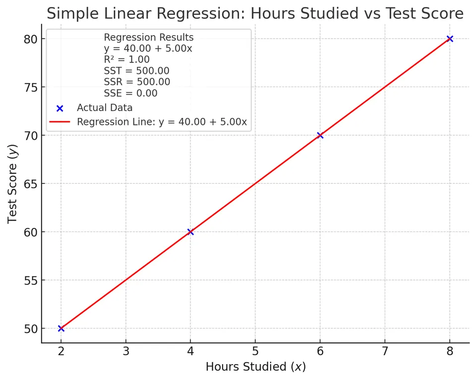

Simple linear regression is a statistical method used to model the relationship between a single dependent variable and one independent variable. It aims to find the best-fitting straight line through the data points, which can be used to predict the dependent variable based on the independent variable.
In everyday terms, you can think of it as drawing a single straight line that best summarizes how one quantity (for instance, house price) tends to move whenever another quantity (such as house size) changes.
The mathematical representation of the simple linear regression model is:
$$ y_i = \beta_0 + \beta_1 x_i + \varepsilon_i, \quad i = 1, 2, \dots, n $$
Where:
Conceptually, $\varepsilon_i$ captures everything about $y_i$ that is not explained by $x_i$. If the model is perfect, $\varepsilon_i$ would always be exactly zero—something that almost never happens with real-world data.
For the simple linear regression model to be valid, several key assumptions must be met:
A quick way to remember these assumptions is “LINE” plus “no‐error-in-$x$”: Linearity, Independence, Normality, Equal variance. Diagnostic plots such as residual-vs-fit, Q-Q plots, and scale-location plots are routinely used to check whether LINE holds in practice.
The goal is to find estimates $\hat{\beta}_0$ and $\hat{\beta}_1$ that minimize the sum of squared residuals (differences between observed and predicted values):
$\mathrm{SSE} = \sum_{i=1}^{n} (y_i - \hat{y}_i)^2$
$\mathrm{SSE} = \sum_{i=1}^{n} \bigl(y_i - \hat{\beta}_0 - \hat{\beta}_1 x_i\bigr)^2$
“Least squares” literally means “make the squares of the vertical distances from the data points to the line as small as possible.” Squaring the distances keeps positive and negative residuals from canceling and penalizes large misses more heavily than small ones, giving us a single objective function (SSE) to minimize.
The least squares estimates are calculated using the following formulas:
$$ \hat{\beta}_1 = \frac{Sxy}{Sxx} $$
$$ S_{xy} = \sum_{i=1}^n (x_i - \bar{x})(y_i - \bar{y}) $$
$$ S_{xx} = \sum_{i=1}^n (x_i - \bar{x})^2 $$
$$\hat{\beta}_1 = \frac{\mathrm{Cov}(x, y)}{\mathrm{Var}(x)}$$
$$ \hat{\beta}_0 = \bar{y} - \hat{\beta}_1 \bar{x} $$
Where:
Notice how $\hat{\beta}_1$ is essentially the ratio of how $x$ and $y$ co-vary to how $x$ varies by itself. Intuitively, if $x$ and $y$ move together a lot compared with how much $x$ moves on its own, the slope must be steep; if they hardly move together, the slope must be shallow.
In some applications (for example, predicting salary from years of experience), $x = 0$ may not make practical sense. In such cases, $\hat{\beta}_0$ is still needed mathematically—even if we never literally interpret it—because it “anchors” the regression line.
Measures the total variability in the dependent variable:
$$ \text{SST} = \sum_{i=1}^{n} (y_i - \bar{y})^2 $$
SST is what the variability looks like before we apply any model. It is the baseline against which every model is judged.
Measures the variability explained by the regression:
$$ \text{SSR} = \sum_{i=1}^{n} (\hat{y}_i - \bar{y})^2 $$
SSR tells us how much of the baseline variability SST our straight line succeeds in accounting for.
Measures the unexplained variability:
$$ \text{SSE} = \sum_{i=1}^{n} (y_i - \hat{y}_i)^2 $$
By construction, $\text{SST} = \text{SSR} + \text{SSE}$. Whenever SSE is small relative to SST, our line is doing a good job.
Indicates the proportion of variance in $y$ explained by $x$:
$$ R^2 = \frac{\text{SSR}}{\text{SST}} = 1 - \frac{\text{SSE}}{\text{SST}} $$
An $R^2 $ value close to 1 suggests a strong linear relationship.
For example, $R^2 = 0.87$ means “87 % of the variability in the outcome is captured by our one-predictor model,” leaving 13 % to chance, omitted variables, or measurement noise.
Test Statistic:
$$ t = \frac{\hat{\beta}_1}{\text{SE}(\hat{\beta}_1)} $$
Where:
$$ \mathrm{SE}(\hat\beta_1) = \frac{s}{\sqrt{\displaystyle\sum_{i=1}^n (x_i - \bar{x})^2}} $$
And:
$$ s = \sqrt{\frac{\text{SSE}}{n - 2}} $$
The test statistic follows a T-distribution with $n - 2$ degrees of freedom.
If the absolute value of $t$ is large (or equivalently, the $p$-value is small), we reject $H_0$ and conclude that the slope is statistically different from zero—i.e., $x$ provides meaningful information about $y$. In practice, analysts often complement the $t$-test with a confidence interval for $\beta_1$ to see a plausible range of slopes.
Suppose we have the following data on the number of hours studied ($x$) and the test scores ($y$):
| Hours Studied ($x$) | Test Score ($y$) |
|---|---|
| 2 | 50 |
| 4 | 60 |
| 6 | 70 |
| 8 | 80 |
With only four paired observations this is a toy data set—perfect for hand calculations and for seeing each arithmetic step clearly, but obviously much smaller than what you would use in practice.
I. Calculate the Means
$$ \bar{x} = \frac{2 + 4 + 6 + 8}{4} = 5 $$
$$ \bar{y} = \frac{50 + 60 + 70 + 80}{4} = 65 $$
The means serve as the “balance points” of the $x$ and $y$ distributions. Centering each variable around its mean (by subtracting $\bar{x}$ or $\bar{y}$) makes the subsequent algebra cleaner and is the core of why the least-squares formulas work.
II. Compute the Sum of Squares and Cross-Products
Create a table to organize calculations:
| $x_i$ | $y_i$ | $x_i - \bar{x} $ | $y_i - \bar{y} $ | $(x_i - \bar{x})(y_i - \bar{y})$ | $(x_i - \bar{x})^2 $ |
|---|---|---|---|---|---|
| 2 | 50 | -3 | -15 | 45 | 9 |
| 4 | 60 | -1 | -5 | 5 | 1 |
| 6 | 70 | 1 | 5 | 5 | 1 |
| 8 | 80 | 3 | 15 | 45 | 9 |
| Total | 100 | 20 |
Here, the cross-product column captures how $x$ and $y$ move together. Large positive numbers mean both variables are either above or below their means at the same time; large negative numbers would indicate opposite movements.
Sum of Cross-Products:
$$ \sum_{i=1}^{n} (x_i - \bar{x})(y_i - \bar{y}) = 100 $$
Sum of Squares of $x$:
$$ \sum_{i=1}^{n} (x_i - \bar{x})^2 = 20 $$
Think of the first sum as the numerator of the slope (how $x$ co-varies with $y$) and the second as the denominator (how much $x$ varies by itself).
III. Calculate the Slope ($\hat{\beta}_1$)
$$ \hat{\beta}_1 = \frac{\sum (x_i - \bar{x})(y_i - \bar{y})}{\sum (x_i - \bar{x})^2} = \frac{100}{20} = 5 $$
Interpreted literally, every additional hour of study is associated with a 5-point increase in the test score.
IV. Calculate the Intercept ($\hat{\beta}_0$)
$$ \hat{\beta}_0 = \bar{y} - \hat{\beta}_1 \bar{x} = 65 - (5)(5) = 40 $$
Although “0 hours studied” lies outside the observed data, the intercept mathematically pins down where the regression line crosses the $y$-axis.
V. Formulate the Regression Equation
$$ \hat{y} = 40 + 5x $$
This compact equation now lets us predict a test score for any study-hours value (within reason) by simple substitution.
VI. Predict the Test Scores and Calculate Residuals
| $x_i$ | $y_i$ | $\hat{y}_i = 40 + 5x_i$ | Residuals ($y_i - \hat{y}_i$) |
|---|---|---|---|
| 2 | 50 | 50 | 0 |
| 4 | 60 | 60 | 0 |
| 6 | 70 | 70 | 0 |
| 8 | 80 | 80 | 0 |
Every residual is exactly zero—an outcome that almost never occurs with real-world data and signals a perfect linear fit for these four points.
VII. Calculate the Sum of Squares
Total Sum of Squares (SST):
$$ \text{SST} = \sum (y_i - \bar{y})^2 = (-15)^2 + (-5)^2 + 5^2 + 15^2 = 500 $$
Sum of Squared Errors (SSE):
$$ \text{SSE} = \sum (y_i - \hat{y}_i)^2 = 0 $$
Regression Sum of Squares (SSR):
$$ \text{SSR} = \text{SST} - \text{SSE} = 500 - 0 = 500 $$
Since the regression explains all variability ($SSE = 0$), SSR equals SST, satisfying the identity $SST = SSR + SSE$.
VIII. Compute the Coefficient of Determination ($R^2 $)
$$ R^2 = \frac{\text{SSR}}{\text{SST}} = \frac{500}{500} = 1 $$
An $R^2 $ value of 1 indicates that the model perfectly explains the variability in the test scores.

In practice you should be cautious: a perfect $R^2$ can be a sign of overfitting, data entry errors, or—more benignly—an extremely small, contrived sample like this one.
IX. Calculate the Standard Error of the Estimate ($s $)
$$ s = \sqrt{\frac{\text{SSE}}{n - 2}} = \sqrt{\frac{0}{2}} = 0 $$
The standard error measures typical residual size. Here, with all residuals exactly zero, the estimate collapses to zero as well.
Consequently,
the estimated standard errors for both $\hat{\beta}_0$ and $\hat{\beta}_1$ are also zero, implying infinite precision—again a mathematical quirk of a perfect fit, not a realistic outcome.
X. Hypothesis Testing (Optional)
In this case, the test statistic for $\hat{\beta}_1$ is undefined due to division by zero in the standard error. However, in practice, with more realistic data where $s > 0$, you would perform a $t $-test to assess the significance of the slope.
When $s$ is positive the $t$-test asks, “Is the observed slope big compared with the noise?” Here there is no noise, so the usual inferential machinery breaks down—which actually reinforces the lesson that perfect fits are the exception, not the rule.